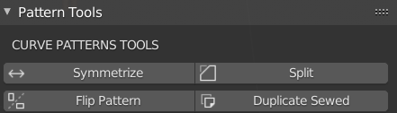

Pattern Tools#
They help with symmetrical modeling of garment 2d curves. 
Split patterns#
Split 2D curve into two separate object. The cut will be determined by two selected bezier points. If not points are selected, the cut will fail. There is also F6 - 'Mirror instance' option, that will create symmetrical copy from one slice of selected 2d curve.
Flip patterns#
This will create instance on opposite side of character form selected 2d curve. If mesh with same name but different suffix is found on scene, the instance won't be created, and the position of object with same name will be created. For this to work the suffix for pair of objects has to be one of below: * (.l, .r) or (_r, _l) or same but with Upper case. For example: arm_l, arm_r is valid.
Duplicate sewed pattern#
This option will duplicate selected 2d curve, and it will connect each edge of duplicate to edges of source object, if source object is used is one of scene Garment patterns.
Symmetrize#
It works like mirror modifier on meshes. For it to work 2 points have to be located near the 0 point in X-axis.